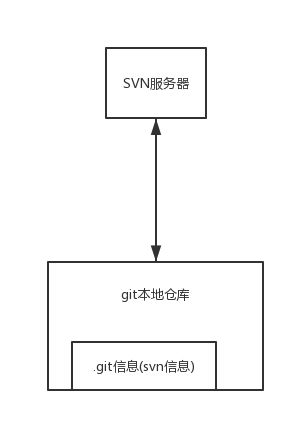

去年年初加入了新公司，进来后发现大家同时在用svn和git做代码管理。总是在两种代码管理工具中切换，总还是有点烦恼，因此萌生了统一代码管理工具的想法。
git作为新兴的分布式代码管理工具，个人认为有以下几个优点：
- git协议传输效率更快，下代码和提交代码速度快，用着更爽
- git的工作空间在同一个目录下，切换分支时目录不变，IDE里面不需要开多个分支的窗口
- 开源仓库管理系统，gitlab，对git仓库的支持已经很完善，codeRiew、代码统计等使用很方便，跟github类似
- 世界上最大的开源代码托管平台github，本身也是使用了git管理代码，受到广大程序员的追捧，使用git，可以降低我们学习开源代码的门槛
迁移思路
简易思路
只迁移主干代码，分支、tag、历史记录等全部丢弃。
方法很简单：
- 将代码checkout到本地
- 将主干导出成干净的项目代码（使用svn的导出功能，导出后的文件夹不包含svn的元数据目录）
- 创建并初始化远程仓库
- 将远程仓库clone到本地
- 将导出的代码提交到本地仓库，然后push到远程仓库
这种方法是最好理解的，相当于提交并push了一次代码。如果你确定只需要主干代码，这样操作其实效率是最高的。
文艺思路
因为产品可能发布了多个版本，如果碰到bug需要修复，可能多个版本都要同步修改，这种情况，一般我们会在svn里面使用多个分支维护代码，所以就要保留分支，甚至要把tag和历史记录也要保留下来，便于后面回溯问题。
这时候，就要使用到git提供的一个牛逼工具：git-svn。 使用git的方式，来管理svn服务器上的代码。 他可以把svn服务器上的代码，以git仓库的形式保存在本地，提交时又以svn的格式提交到svn服务器。

迁移步骤
使用git svn clone 将svn代码clone到本地
git svn clone http://svn.develop.taobao.net/repos/appname/ --no-metadata --authors-file=authorfile
上面这个命令，会首先在本地初始化一个git仓库，仓库位于你当前执行命令的路径下，仓库的名字就是appname；然后，该命令会继续执行，把svn仓库的提交记录and代码拉到本地这个git仓库中。
参数介绍：
–no-metadata 参数是阻止git 导出svn包含的附加信息，这样提交到Git的记录就会显得很“干净”(抄的网上的)
–trunk=trunk 指定主干的目录，该目录相对于上面的svn目录，即表明主干在（http://svn.develop.taobao.net/repos/appname/trunk目录下）
–tags=tags 指定tag的目录，同trunk目录，也是相对于前面指明的svn目录
–branches=branches 指定分支所在的目录，同trunk目录，也是相对于前面指明的svn目录
appname 目标git仓库的名字
–authors-file=authorfile 指定svn的作者和git中的作者的映射文件，因为svn中作者只包含一个用户名，而gitlab中包含名字和邮箱地址，而邮箱地址才是用来唯一确定一个用户，所以要把作者的邮箱补充进去，否则gitlab无法把用户正确映射到gitlab的用户上。（不指定该文件不影响代码迁移，但是会导致历史的提交记录无法在gitlab上映射正确的作者）。该文件的格式如下：
svn作者id1 = gitlab用户昵称1<邮箱1>
svn作者id2 = gitlab用户昵称2<邮箱2>
…
clone异常处理
上述命令会把svn上所有的提交记录、分支、tag、主干全部复制到git库里，因为内容较多，这样可能会很容易导致该命令在执行过程中因为各种原因中断，此时不需要重新执行该命令。
先执行 cd appname 进入git仓库的目录
执行 git svn fetch 命令，git会继续中断处执行svn仓库的clone过程
##在gitlab上创建项目，并把本地git库推到该项目中
在gitlab上创建空目标仓库，创建完成后不要提交任何文件，否则会导致主干无法推送到远程，如果出现这种情况，请删除仓库重新操作。
通过以上步骤创建的本地仓库，其实是为了兼容管理远端的svn仓库而创建的，跟正规的git仓库有一点小小的区别，因此需要我们给他做个小手术，使之成为正式的git仓库，然后在推送到远程仓库中。
首先，要把svn的标签变成git的标签$ cp -Rf .git/refs/remotes/origin/tags/* .git/refs/tags$ rm -Rf .git/refs/remotes/origin/tags
接下来，把refs/remotes 下面剩下的索引变成本地分支：cp -Rf .git/refs/remotes/origin/* .git/refs/headsrm -Rf .git/refs/remotes/origin
添加远程仓库地址git remote add origin git@gitlab.alibaba-inc.com:icbu-rfq/appname.git
将本地仓库推送到远程
git push origin --all 推送主干和分支
git push --tags 推送标签
总结
整个的迁移过程，有几个需要注意的地方，总结如下：
- authors-file 的制作，因为你并不知道原来的svn上到底有哪些人提交过代码，所以一次把所有作者列出来几乎不可能。所以，首先弄一个空的文件，里面可以先把你知道的几个作者写进去，然后执行clone，如果在fetch过程中碰到了未定义的提交者时，迁移过程会被强行中断，并且提示你哪个提交者没有定义，这个时候你再把这个提交者写进文件里，然后执行git svn fetch继续拉代码，效率虽低，但是好使。
- svn的tag被拉下来时，是以分支的形式存在git库中的，所以我们上面提到了要做一下小手术，把tag移动到git的tag下面， git版本不同，路径可能不一定跟上面讲的完全一致，这种情况自己试一下看看就知道了，不对的话就把git远程库删掉重来。
- 推送到远程仓库时，重点看一下你的主干分支，是否有代码。如果你的远程仓库之前有过提交记录，那么主干上是推不进任何内容的
- git仓库本地缓存的分支是有上限的，所以你很难把所有分支全部拉到本地，如果有必须要保留的分支，记得执行一下git checkout把分支缓存到本地
git checkout -b local-branchname origin/remote_branchname